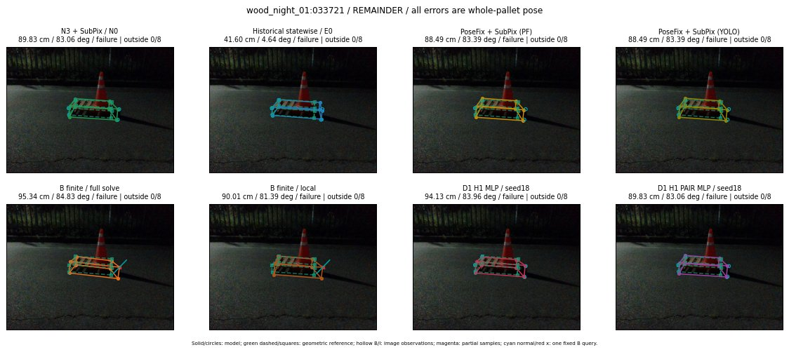

Whole-pallet pose errors; reference is a fixed geometric annotation, not certified physical GT.

Scores are uncalibrated logits. N0 retention is a numerical pose alias; it differs from H0 none or B fallback. B/I and profiles in baseline/B panels are original observations; L panels use new D1 observations. Only one deterministic supported B query is shown in a thumbnail; full support counts are below. Grey privacy rectangles edit the display copy only and are unrelated to O states; all observations were measured on original pixels. Thumbnails use JPEG quality85; detailed scientific panels are PNG.
| Method | Whole pose / cm, deg | Actual source | Selected ID | Score | Archived candidates | Eligible | N0 retained | H0 none | Fallback | Finite profiles |
|---|---|---|---|---|---|---|---|---|---|---|
| Raw YOLO + F | 89.42 cm / 84.33 deg / failure | OTHER | None | N/A | N/A | N/A | False | N/A | None | N/A |
| N3 + SubPix / N0 | 89.83 cm / 83.06 deg / failure | N0 | None | N/A | N/A | N/A | True | N/A | None | N/A |
| Historical statewise / E0 | 41.60 cm / 4.64 deg / failure | E0_REGENERATED | None | N/A | N/A | N/A | False | N/A | False | N/A |
| PoseFix raw | 89.16 cm / 83.72 deg / failure | OTHER | None | N/A | N/A | N/A | False | N/A | None | N/A |
| PoseFix + SubPix (PF) | 88.49 cm / 83.39 deg / failure | OTHER | None | N/A | N/A | N/A | False | N/A | False | historical support records 9; finite audit N/A |
| PoseFix + SubPix (YOLO) | 88.49 cm / 83.39 deg / failure | OTHER | None | N/A | N/A | N/A | False | N/A | False | historical support records 9; finite audit N/A |
| Historical L, seed18 | 89.83 cm / 83.06 deg / failure | N0 | N0 | N/A | 43 | 43 | True | True | True | N/A |
| Historical B fixed bank | 41.18 cm / 5.75 deg / failure | OTHER | G10/SWAPPED_WD/sample/1 | N/A | N/A | N/A | False | N/A | False | N/A |
| Historical B full | 52.76 cm / 13.67 deg / failure | OTHER | NEW/B/SWAPPED_WD/h3/G10/ORIGINAL_WD/sample/3/PROPOSED_NATIVE_YAW_3 | N/A | N/A | N/A | False | N/A | False | N/A |
| Historical edge full | 51.72 cm / 15.99 deg / failure | OTHER | NEW/edge/SWAPPED_WD/h3/G10/ORIGINAL_WD/sample/3/PROPOSED_NATIVE_YAW_3 | N/A | N/A | N/A | False | N/A | False | N/A |
| Historical AB full | 52.50 cm / 13.76 deg / failure | OTHER | NEW/AB/ORIGINAL_WD/h3/G10/ORIGINAL_WD/sample/3/PROPOSED_NATIVE_YAW_3 | N/A | N/A | N/A | False | N/A | False | N/A |
| B finite / fixed bank | 89.83 cm / 83.06 deg / failure | N0 | N0 | N/A | N/A | N/A | True | N/A | True | N/A |
| B finite / full solve | 95.34 cm / 84.83 deg / failure | OTHER | NEW_FINITE/B/ORIGINAL_WD/h0/G10/ORIGINAL_WD/sample/0/PROPOSED_NATIVE_YAW_0 | N/A | N/A | N/A | False | N/A | False | 2/2 |
| B finite / local | 90.01 cm / 81.39 deg / failure | OTHER | NEW_FINITE/B/ORIGINAL_WD/h0/N0_LOCAL_SAME_PHYSICAL_POSE/ORIGINAL_WD | N/A | N/A | N/A | False | N/A | False | 2/2 |
| Edge finite / full solve | 47.73 cm / 11.32 deg / failure | OTHER | NEW_FINITE/edge/SWAPPED_WD/h3/G10/ORIGINAL_WD/sample/3/PROPOSED_NATIVE_YAW_3 | N/A | N/A | N/A | False | N/A | False | 2/2 |
| D0 H0 MLP / seed18 | 89.83 cm / 83.06 deg / failure | N0 | N0 | 0.9647513628005981 | 7 | 7 | True | True | True | N/A |
| D0 H0 MLP / seed19 | 89.83 cm / 83.06 deg / failure | N0 | N0 | 1.7104988098144531 | 7 | 7 | True | True | True | N/A |
| D0 H0 MLP / seed20 | 89.83 cm / 83.06 deg / failure | N0 | N0 | -0.21811985969543457 | 7 | 7 | True | True | True | N/A |
| D0 H1 MLP / seed18 | 94.13 cm / 83.96 deg / failure | OTHER | WD0/ORIGINAL_WD/selected | -3.798865556716919 | 7 | 7 | False | False | False | N/A |
| D0 H1 MLP / seed19 | 94.13 cm / 83.96 deg / failure | OTHER | WD0/ORIGINAL_WD/selected | -3.7779557704925537 | 7 | 7 | False | False | False | N/A |
| D0 H1 MLP / seed20 | 94.13 cm / 83.96 deg / failure | OTHER | WD0/ORIGINAL_WD/selected | -4.112813472747803 | 7 | 7 | False | False | False | N/A |
| D1 H0 MLP / seed18 | 89.83 cm / 83.06 deg / failure | N0 | N0 | 3.800562858581543 | 7 | 7 | True | True | True | N/A |
| D1 H0 MLP / seed19 | 89.83 cm / 83.06 deg / failure | N0 | N0 | 3.771639823913574 | 7 | 7 | True | True | True | N/A |
| D1 H0 MLP / seed20 | 89.83 cm / 83.06 deg / failure | N0 | N0 | 3.639492988586426 | 7 | 7 | True | True | True | N/A |
| D1 H1 MLP / seed18 | 94.13 cm / 83.96 deg / failure | OTHER | WD0/ORIGINAL_WD/selected | -2.390289306640625 | 7 | 7 | False | False | False | N/A |
| D1 H1 MLP / seed19 | 94.13 cm / 83.96 deg / failure | OTHER | WD0/ORIGINAL_WD/selected | -2.053659677505493 | 7 | 7 | False | False | False | N/A |
| D1 H1 MLP / seed20 | 94.13 cm / 83.96 deg / failure | OTHER | WD0/ORIGINAL_WD/selected | -2.827162981033325 | 7 | 7 | False | False | False | N/A |
| D1 H1 ROLE AFFINE / seed18 | 89.83 cm / 83.06 deg / failure | N0 | N0 | 0.14041802287101746 | 7 | 7 | True | False | False | N/A |
| D1 H1 ROLE AFFINE / seed19 | 89.83 cm / 83.06 deg / failure | N0 | N0 | 0.03445574268698692 | 7 | 7 | True | False | False | N/A |
| D1 H1 ROLE AFFINE / seed20 | 89.83 cm / 83.06 deg / failure | N0 | N0 | 0.4148665964603424 | 7 | 7 | True | False | False | N/A |
| D1 H1 PAIR MLP / seed18 | 89.83 cm / 83.06 deg / failure | N0 | N0 | -1.2580888271331787 | 7 | 2 | True | False | False | N/A |
| D1 H1 PAIR MLP / seed19 | 89.83 cm / 83.06 deg / failure | N0 | N0 | -1.631131649017334 | 7 | 2 | True | False | False | N/A |
| D1 H1 PAIR MLP / seed20 | 89.83 cm / 83.06 deg / failure | N0 | N0 | -2.623292922973633 | 7 | 2 | True | False | False | N/A |
| D1 H1 PAIR ROLE AFFINE / seed18 | 89.83 cm / 83.06 deg / failure | N0 | N0 | -0.32896119356155396 | 7 | 2 | True | False | False | N/A |
| D1 H1 PAIR ROLE AFFINE / seed19 | 89.83 cm / 83.06 deg / failure | N0 | N0 | -1.1583247184753418 | 7 | 2 | True | False | False | N/A |
| D1 H1 PAIR ROLE AFFINE / seed20 | 89.83 cm / 83.06 deg / failure | N0 | N0 | -0.29834628105163574 | 7 | 2 | True | False | False | N/A |
| Regenerated common E0 | 41.60 cm / 4.64 deg / failure | E0_REGENERATED | E0_REGENERATED | N/A | N/A | N/A | False | N/A | False | N/A |